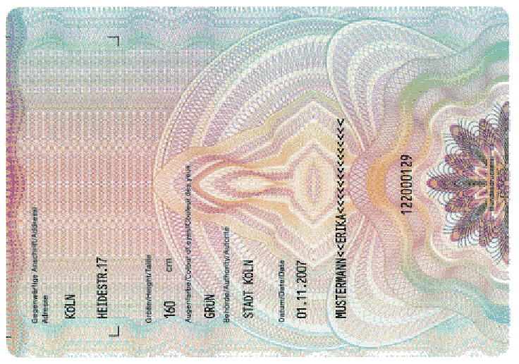

Deutsche [...] sind verpflichtet, einen Ausweis zu besitzen, sobald sie 16 Jahre alt sind [...].Gesetz
über Personalausweise und den elektronischen Identitätsnachweis
- Verifikation der Identität des Bürgers
- im Inland
- im Reiseverkehr (in der EU)

http://commons.wikimedia.org/wiki/File%3AMustermann_PA_2007.jpg, http://commons.wikimedia.org/wiki/File%3AMustermann_PA_2007_RS.jpg